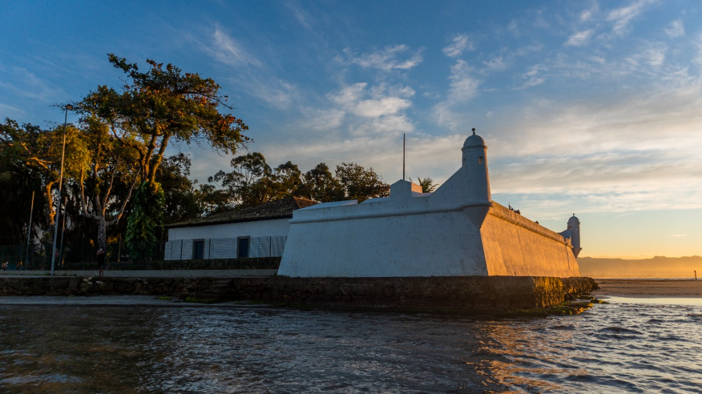
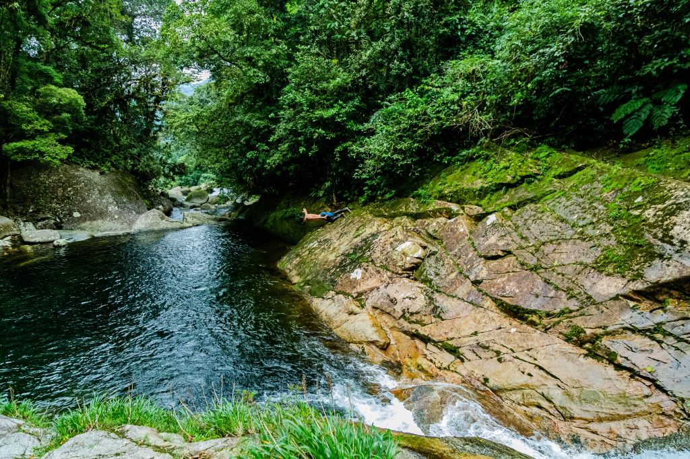
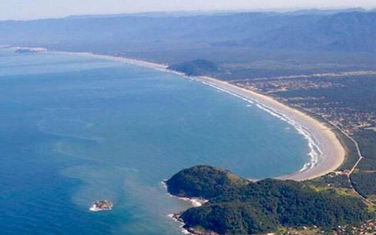

História
Origem: O Ponto Estratégico da Costa
Em 1531, Martim Afonso de Sousa, nomeado Governador Geral da Costa do Brasil, aportou nas águas da antiga Buriquioca (atual Bertioga). Diferente da fundação imediata de uma vila, o governador deixou ali uma feitoria e um pequeno fortim, sob a coordenação de homens que permaneceram no local enquanto ele seguia para fundar São Vicente.
Primeiro Núcleo de Defesa: A organização inicial não foi uma vila urbana clássica, mas um posto militar vital. Surgiu a figura de Diogo de Braga, personagem de origem desconhecida que já vivia entre os indígenas tupis, era casado com uma índia e falava a língua local. A ele, seus cinco filhos e aos companheiros deixados pelo governador, deve-se a construção da primeira estacada, precursora do atual Forte São João.
O Encontrão de Culturas e Conflitos: A história de Bertioga é marcada pela tensão constante. A região constituiu-se um ponto estratégico na defesa contra o caminho natural de tamoios e franceses. Relatos de Hans Staden descrevem frequentes assaltos, evidenciando que a ocupação portuguesa só se consolidou pela força das armas e alianças locais, diferente da mediação pacífica vista em outros pontos iniciais.
Desenvolvimento: Entre a Guerra e o Isolamento
Durante séculos, Bertioga funcionou primordialmente como um bastião militar, vivendo à sombra das vilas vizinhas e sob ameaça constante.
A Consolidação Militar: Após ataques dos índios tupinambás que incendiaram a primeira paliçada, a fortificação foi efetivada em 1547. Foram erguidos dois fortes: o Forte São João (no trecho continental) e o Forte São Tiago (na ilha de Santo Amaro), consolidando a presença portuguesa na barra.
Séculos de Função Estratégica: Por muito tempo, o local não teve desenvolvimento urbano civil significativo, mantendo-se como guarita do litoral. Foi no Forte São João que, em 1563, os jesuítas Manoel da Nóbrega e José de Anchieta se hospedaram por cinco dias antes de partirem para Ubatuba para apaziguar os índios na Confederação dos Tamoios. Em 1565, foi também de Bertioga que Estácio de Sá e sua esquadra partiram para combater os franceses e fundar a cidade do Rio de Janeiro. O sítio primitivo era uma pequena linha de praia protegida pelo outeiro de Buriquioca, hoje Morro da Senhorinha.
Emancipação e Século XX
Embora ocupada desde o início da colonização, Bertioga demorou séculos para conquistar autonomia política, sendo a cidade mais jovem da região.
Ressurgimento Turístico: Assim como vizinhas, Bertioga passou por um longo período de estagnação populacional, servindo quase exclusivamente como ponto de passagem ou defesa. A transformação em polo residencial e de veraneio acelerou-se no século XX com a melhoria dos acessos rodoviários e a pressão imobiliária da Baixada Santista, atraindo moradores em busca de áreas menos densas que Santos ou São Vicente.
Cidade Atual: Bertioga conquistou sua emancipação política apenas recentemente, tornando-se a "caçula" da Baixada Santista. Segundo dados de 2023, o município completou 31 anos de emancipação, indicando que sua separação administrativa ocorreu em 1992. Hoje, consolidou-se como um município que equilibra preservação histórica, com o Forte São João como seu maior símbolo, e expansão imobiliária voltada ao turismo e residência fixa.
Pontos Turísticos de Bertioga
Forte São João: O cartão-postal histórico obrigatório. Construído originalmente como estacada em 1532 e consolidado em pedra em 1547, é a edificação militar mais antiga do Brasil em seu local original. Foi palco estratégico da partida de Estácio de Sá para fundar o Rio de Janeiro e ponto de parada de Nóbrega e Anchieta durante a Confederação dos Tamoios. Visitar o forte é pisar no solo onde a defesa da colônia começou de verdade.

Trilha da Garganta do Gigante: Para quem busca intensidade física e recompensa visual. Com 300 metros de altitude, o percurso exige preparo e oferece uma imersão profunda na Mata Atlântica. O acesso pode ser feito pela trilha São Lourenço ou via barco pelo rio Itaguaré, sendo um dos melhores pontos da região para observação de aves (birdwatching) e fotografia de natureza, longe da agitação urbana das praias centrais.

Praia de Boraceia: Localizada a 21 km do centro, é o refúgio de quem procura águas calmas e infraestrutura consolidada sem a superlotação das praias mais famosas. A região abriga pousadas tradicionais e mantém um clima familiar, servindo como base ideal para explorar o lado sul do município com mais tranquilidade.

Curiosidade
A Trilha do Morro do Itaguá: que corta costões rochosos e oferece vistas panorâmicas de Guaratuba e Boraceia, carrega um legado inusitado: ela foi e ainda é utilizada como campo de treinamento físico para *comissários de bordo. As companhias aéreas usam o terreno acidentado de Mata Atlântica para testar a resistência e o condicionamento de suas tripulações em ambiente de selva, transformando uma rota turística em um laboratório de preparação profissional real.